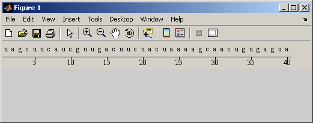

This demonstration illustrates how to create BioJava objects and call BioJava methods from within MATLAB.
NOTE: This example uses the BioJava binary jar files. These must be installed to run this demonstration. See http://www.biojava.org for current release files and complete installation instructions. This example was written using biojava-1.3.1.jar.
For more information on the use of specific BioJava classes, see the BioJava JavaDoc at http://www.biojava.org/docs/api/index.html .
MATLAB can directly interact with Java classes. A new feature in MATLAB R14 allows you to dynamically add new Java classes to MATLAB. This is done using the javaclasspath function.
% Modify this line to the correct location of your biojava installation. biojavaDir = 'D:\biojava'; % This example was written using the biojava-1.3.1.jar. % If you have the full installation of BioJava, you only need to specify % the path to the installation. biojavaJar = 'biojava-1.3.1.jar'; jarPath = fullfile(biojavaDir,biojavaJar); % Add BioJava to the dynamic Java path. javaclasspath(jarPath);
You will next need to import the BioJava classes that you want to use.
import org.biojava.bio.symbol.*; import org.biojava.bio.seq.*;
Create a DNA Symbolic List object.
seq = 'tagcttcatcgttgacttctactaaaagcaactgtgagtaa'; dna = DNATools.createDNA(seq); % Note that this is a Java object, not a MATLAB character array. JavaObject = class(dna) % To retrieve the sequence as a MATLAB character array, use the seqString % method. seqFromObject = dna.seqString
JavaObject = org.biojava.bio.symbol.SimpleSymbolList seqFromObject = tagcttcatcgttgacttctactaaaagcaactgtgagtaa
You can use the DNATools methods to manipulate sequence. In this example the reverse complement of the sequence is calculated and the DNA sequence is transcribed to an RNA sequence.
rdna = DNATools.reverseComplement(dna); rdnaseq = rdna.seqString rna = RNATools.transcribe(dna); rnaseq = rna.seqString
rdnaseq = ttactcacagttgcttttagtagaagtcaacgatgaagcta rnaseq = uagcuucaucguugacuucuacuaaaagcaacugugaguaa
BioJava includes several graphics functions including a trace viewer and GUIs for displaying sequences. These are in the gui.sequence package. After importing the package, you can create a SequencePanel object that will be used to display the sequence.
import org.biojava.bio.gui.sequence.*; seqPanel = SequencePanel; % Set the sequence to be displayed. seqPanel.setSequence(rna); % Set the range of the sequence to be shown. seqPanel.setRange(RangeLocation(1,rna.length()));
BioJava provides many different ways to visualize a sequence. By using a MultiLineRenderer object you can use several of these methods at once.
mlr = MultiLineRenderer; % A SymbolSequenceRenderer is used to display the symbols a,c,g,t. mlr.addRenderer(SymbolSequenceRenderer); % A RulerRenderer is used to display a ruler showing positions along the % sequence. mlr.addRenderer(RulerRenderer); seqPanel.setRenderer(mlr);
Create a figure and add the sequence panel to the figure using the javacomponent function
F = figure; javacomponent(seqPanel, java.awt.BorderLayout.NORTH, F); % Try resizing the figure. The seqPanel object will report back to the % MATLAB Command Window on how much of the sequence is visible.